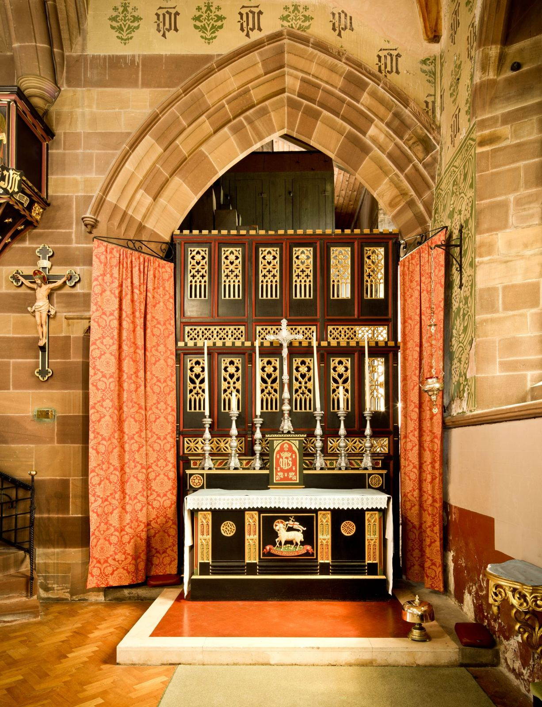

Our Classes
[PLACEHOLDER IMAGE, NOT HOLY FAMILY]
“The Christian home is the place where children receive the first proclamation of the faith. For this reason the family home is rightly called ‘the domestic church,’ a community of grace and prayer, a school of human virtues and of Christian charity” (No. 1666).
We offer 4 different classes that are open to children in grades TK-5
[PHOTO RELEASES — PARISH TO CONFIRM PER IMAGE, OR SUPPLY A CLEARED SET]
SUNDAY PRESCHOOL
Children (ages 4-5) will build a foundational understanding of the Catholic faith and basic moral values such as kindness, sharing, compassion, and love for others through: Song, Stories, Craft & Prayer
- Age
- ages 4–5
- Day and time
- [PRESCHOOL CLASS TIME — CONFIRM]
YEAR 1
Children (in grades 1-5) will build a foundational understanding of God, learn basic prayers, and understand the importance of loving God and others.
- Grades
- grades 1–5
- Day and time
- Sundays 9:30–10:45 AM or Wednesdays 4:00–5:15 PM
YEAR 2 & Sacramental Preparation
Children who have completed Year 1 will continue to grow in their relationship with God while preparing for the Sacraments of Reconciliation and First Holy Communion. 1st Communion is usually the first Saturday in May.
Preparation for the Sacraments
[CURRENT YEAR SACRAMENT AND TERM DATES — CONFIRM]
- Day and time
- Sundays 9:30–10:45 AM or Wednesdays 4:00–5:15 PM


YOUNG DISCIPLES
We invite children who have already received the Sacraments to return, where they can dive deeper into the core concepts of the Catholic Church. Topics explored are The Mass, the Saints, Mary & how to keep Prayer part of everyday life.
- Day and time
- [YOUNG DISCIPLES GRADES AND CLASS TIME — CONFIRM]
[LOGO AND GRAPHIC ORIGINALS — VECTOR / LAYERED FILES? — CONFIRM]
2026-2027 REGISTRATION Closed
Fees, times and what you’ll need